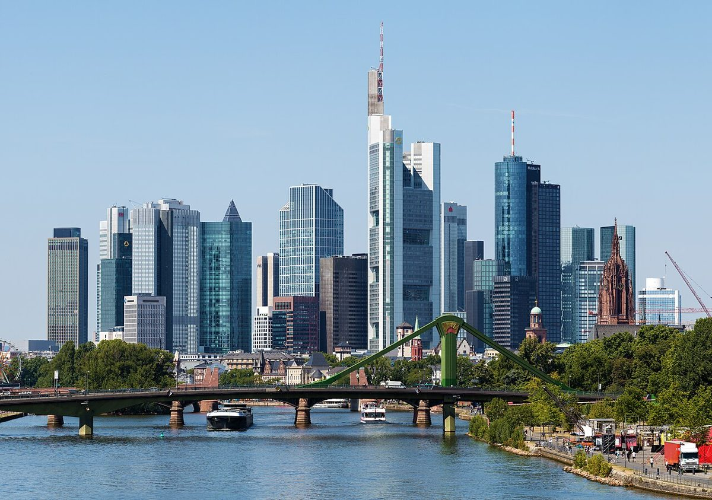

Frankfurts Skyline: Einzigartige Aussichten und urbane Kultur

Frankfurt am Main, oft als 'Mainhattan' bezeichnet, ist bekannt für seine beeindruckende Skyline, die einzigartig in Deutschland ist. Wolkenkratzer, moderne Architektur und historische Gebäude bilden ein faszinierendes Kontrastprogramm. Wer nach Frankfurt reist, sollte sich die Skyline auf keinen Fall entgehen lassen. Dieser Artikel bietet praktische Tipps zur Anreise, die beste Reisezeit, Highlights und Empfehlungen für kulinarische Genüsse.
Anreise nach Frankfurt
Frankfurt ist hervorragend an das deutsche und internationale Verkehrsnetz angebunden. Der Flughafen Frankfurt, einer der größten in Europa, liegt nur wenige Kilometer vom Stadtzentrum entfernt. Mit der S-Bahn erreicht man die Innenstadt in rund 15 Minuten. Auch mit dem Zug ist Frankfurt gut erreichbar, da der Hauptbahnhof ein zentraler Knotenpunkt für nationale und internationale Verbindungen ist. Wer mit dem Auto anreist, findet nahe der Skyline zahlreiche Parkmöglichkeiten, allerdings kann der Verkehr in der Stadt ziemlich dicht sein.
Die beste Reisezeit
Frankfurt kann das ganze Jahr über besucht werden, doch die beste Reisezeit liegt zwischen Frühling und Herbst. Im Frühling erwacht die Stadt zum Leben, und die Parks entlang des Mains laden zum Spazieren ein. Der Herbst bietet mildes Wetter und eine bezaubernde Atmosphäre, wenn die Bäume ihre Blätter verlieren. Der Sommer kann zwar heiß werden, aber die vielen Freiluftaktivitäten und Veranstaltungen machen dies wett. Im Winter locken die Weihnachtsmärkte und die festliche Beleuchtung der Skyline.
Highlights der Frankfurter Skyline
1. Main Tower: Der Main Tower ist das einzige Hochhaus in Frankfurt, das für die Öffentlichkeit zugänglich ist. Die Aussichtsplattform bietet einen atemberaubenden 360-Grad-Blick über die Stadt und den Main. Bei klarem Wetter kann man sogar bis zum Taunus blicken.
2. Goethehaus: Obwohl es kein Hochhaus ist, darf das Goethehaus als Teil der kulturellen Landschaft Frankfurts nicht fehlen. Es ist das Geburtshaus des berühmten Dichters Johann Wolfgang von Goethe und bietet Einblicke in das Leben im 18. Jahrhundert.
3. Römer: Der Römer ist das historische Rathaus Frankfurts und ein Symbol der Stadt. Die Fassade mit ihren charakteristischen Treppengiebeln ist ein Muss für jeden Besucher. Hier lässt sich die Verbindung von Alt und Neu besonders gut erkennen.
4. Eiserner Steg: Diese Fußgängerbrücke über den Main verbindet die Altstadt mit Sachsenhausen. Von hier aus hat man einen fantastischen Blick auf die Skyline und viele Gelegenheiten für Fotos.
5. Palmengarten: Der Palmengarten ist einer der schönsten botanischen Gärten Deutschlands. Durch den Gegensatz zwischen riesigen Glasgewächshäusern und der Skyline entsteht eine einzigartige Szenerie.
Essen in Frankfurt
Frankfurt ist nicht nur für seine Skyline, sondern auch für seine kulinarische Vielfalt bekannt. Ein absolutes Muss ist das typische Frankfurter Grüne Soße, eine Spezialität aus sieben Kräutern, die traditionell mit Kartoffeln und Ei serviert wird. Auch Frankfurter Würstchen, oft mit Senf und Brötchen, sind ein Klassiker. Wer es deftig mag, sollte Handkäs mit Musik probieren – ein Gericht aus eingelegtem Käse mit Zwiebeln und Essig. Zum Nachtisch darf ein Stück Frankfurter Kranz, eine Buttercremetorte, nicht fehlen. Zahlreiche Restaurants in der Innenstadt und in Sachsenhausen bieten diese Gerichte an.
Mit diesen Tipps steht einem unvergesslichen Besuch der Frankfurter Skyline nichts mehr im Weg. Viel Spaß beim Entdecken dieser faszinierenden Stadt!
Haiktec
- 7 Erfolgsstrategien für kleine Restaurants und Cafés: Mehr Gäste, mehr Umsatz
- Schwarzwald-Reisekosten-Tracker & Aktivitäten-Planer für internationale Gäste
- Saarland & Mosel Entdecker: 7 Einfache Schritte zu Verborgenen Juwelen und Lokalen Geheimtipps
Text mit KI erstellt und automatisch geprueft.